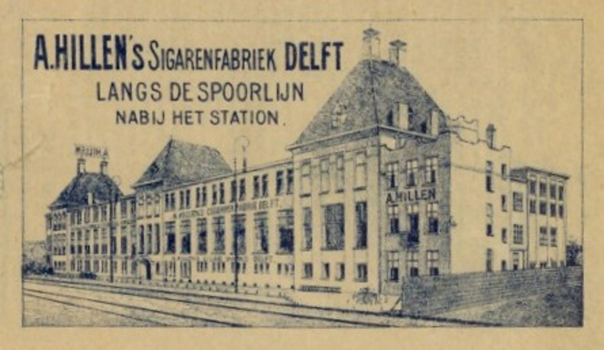
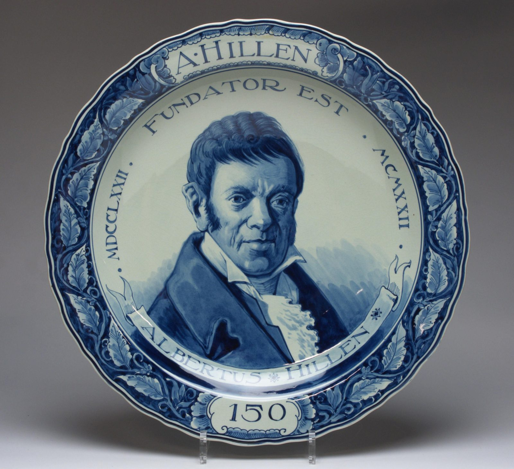
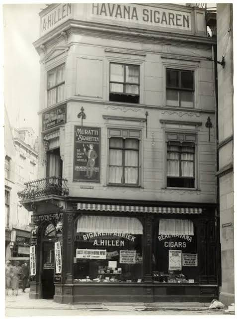
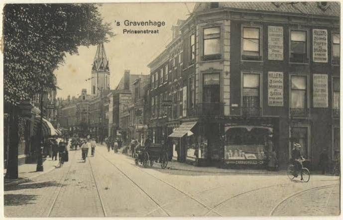
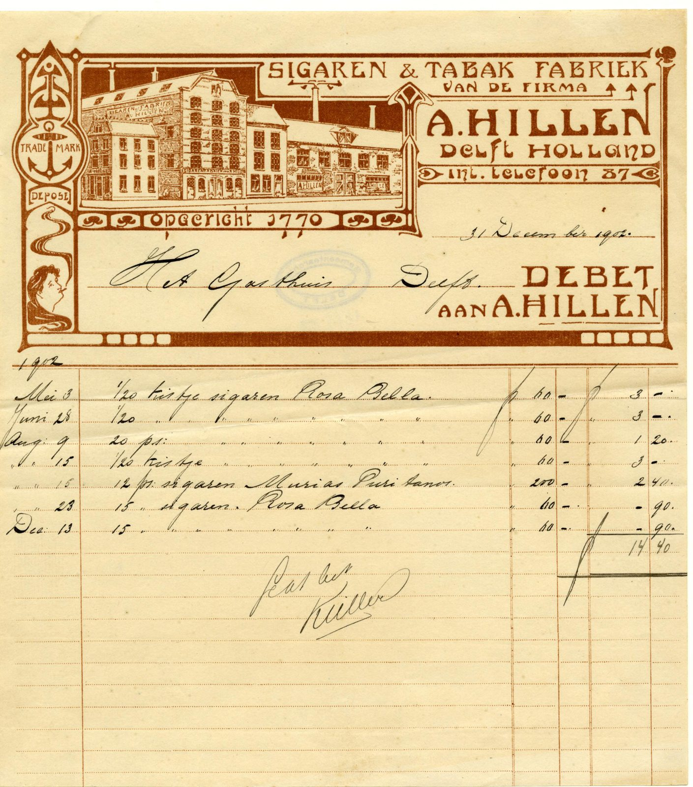

De eerste sigarenfabriek van Nederland
Waar de meeste van de circa 2.500 Nederlandse sigarenfabrieken uit de 19e en 20e eeuw in Noord-Brabant stonden, begon de allereerste in Delft. Gerrit Hillen — in onze stamboom Gerardus Hillen (1743–1805), een telg uit de Blerickse tak van de familie — vestigde zich in 1770 op de hoek van de Oude Delft en de Pepersteeg, in het pand ‘het Rode Anker’. Hij fabriceerde er aanvankelijk tabak, en later ook sigaren. Op 22 februari 1772 kreeg hij van de Schepenen van Delft officieel consent om zijn producten te verkopen.
Het was zijn zoon Albertus Hillen (1774–1834) die de zaak echt tot bloei bracht en fors uitbreidde, onder meer met de aankoop van panden aan de Pepersteeg. Na zijn dood zette zijn vrouw Anna Maria van Spreeuwenburg de zaak nog vier jaar voort. Bij de boedelscheiding van 1835 bleken de bezittingen opvallend breed: naast het woonhuis en pakhuis ‘het Rode Anker’ (Oude Delft nr. 63, en aan de Pepersteeg) hoorde er zelfs een aardewerkfabriek ‘de Bloempot’ bij, geërfd van vader Gerrit.
Van familiebedrijf naar de familie Hioolen
Op een fraaie gedenkschotel, gemaakt ter gelegenheid van het 150-jarig bestaan van de fabriek, staat een portret van Albertus Hillen afgebeeld — met het opschrift ‘Albertus Hillen — Fundator Est’ en de jaartallen 1762 en 1922 (een kleine onnauwkeurigheid ten opzichte van het officieel gehanteerde oprichtingsjaar 1770, zoals wel vaker voorkomt op dit soort jubileumstukken).
Ergens vóór 1861 kwam de dagelijkse leiding in handen van Albertus de Lange (geboren 1825 te Delft), die op het Oude Delft 63 kwam wonen en directeur van de firma Hillen werd — zonder zelf familie te zijn. In 1861 nam Martinus Hioolen (1834–1905) de zaak definitief over, mogelijk gemaakt door financiële steun van zijn oom Willem Hioolen. De Hioolens kwamen uit een zeer oud geslacht (rond 1490!) en waren al generaties eigenaar van de snuifmolens ‘De Lelie’ en ‘De Ster’ aan de Kralingse Zoom in Rotterdam — molens die er vandaag de dag nog steeds staan, nu als museum.


Op zijn hoogtepunt: bijna 700 man personeel
Martinus bracht een revolutionair idee mee uit de familiehandel: in een tijd van stagnerende welvaart bedacht hij een landelijk netwerk van eigen winkelfilialen, om zo een vast afzetgebied voor zijn sigaren te garanderen — in plaats van afhankelijk te zijn van zelfstandige sigarenwinkeliers die overal hun inkoop deden. Onder de naam Van Andel groeide dit uit tot een keten van meer dan 120 sigarenwinkels verspreid over heel Nederland, met zelfs een eigen verkoopkantoor in Batavia (Nederlands-Indië).
Rond 1890 was de tabaksbranche de grootste werkgever van Delft geworden, en rond 1920 telde A. Hillen alleen al bijna 700 werknemers. Het bedrijf behoorde tot de drie sigarenfabrieken van Nederland die hun personeel het best betaalden, en had al vroeg een omvangrijke export naar diverse werelddelen. Tijdens de Eerste Wereldoorlog kocht de fabriek zelfs een stuk grond aan, zodat het personeel in tijden van schaarste eigen groenten kon verbouwen. Directeur C.N.J. Hioolen was tussen de twee wereldoorlogen actief lid van de landelijke commissie die de werking van de merkenwet onderzocht.
De belangrijkste merken — Het Rode Anker en Delftsche Post — gingen door heel Nederland over de toonbank. Tussen 1880 en 1940 waren in Delft zo’n 850 sigarenmakers actief, wat de stad terecht de bijnaam ‘sigarenstad’ opleverde.

Het einde, en wat er restte
In februari 1937 (sommige bronnen noemen 1938) moest de fabriek, dan nog altijd 300 werknemers tellend, definitief de deuren sluiten. Het pand werd gekocht door de firma Braat. Van de mensen die er werkten, is één persoonlijk verhaal goed gedocumenteerd: Leen Dijkshoorn werkte van 1935 tot 1938 op de inpakafdeling, waar de sigaren in blik werden verpakt — hij maakte dus zelf de sluiting van de fabriek nog mee.
De herinnering aan het bedrijf leeft op meerdere plekken voort: de Hillenlaan in de Delftse wijk Delftzicht is naar de fabriek vernoemd (1994), en het Tabakshistorisch Museum Delft — gevestigd in een oude sigarenwinkel — wijdt een vaste plek aan ‘de oudste sigarenfabriek van Nederland’. De volledige geschiedenis is in 2000 vastgelegd door Louis Bracco Gartner in het boek ‘De geschiedenis van de Delftse tabaksnijverheid en die van A. Hillen, de oudste sigarenfabriek van Nederland’ (126 pagina’s, met foto’s van aandelen, firmabrieven en sigarenbandjes).



Bronnen
- GeschiedenisVanZuidHolland.nl, ‘De geschiedenis van de Zuid-Hollandse tabaksnijverheid’
- VerhalenWiki.nl, ‘De historie van A. Hillen en de latere N.V. A. Hillen’s Sigaren- en Tabaksfabriek’
- Tabakshistorie.nl (Stichting Nederlandse Tabakshistorie), ‘Tijdlijn’
- Tabaksmuseum.nl, ‘Delftse Tabaksnijverheid’
- Stichting Haags Industrieel Erfgoed (SHIE), ‘Hillen, A. (1770–1937)’
- Delftsaardewerk.nl, gedenkschotel 150 jaar bestaan A. Hillen’s Sigaren- en Tabaksfabrieken
- stratenvandelft.nl (R. & P. van der Krogt), ‘Hillenlaan’
- Delftkijkt.nl, ‘Sigarenwinkels van Delft’
- L. Bracco Gartner, ‘De geschiedenis van de Delftse tabaksnijverheid en die van A. Hillen, de oudste sigarenfabriek van Nederland’ (2000)